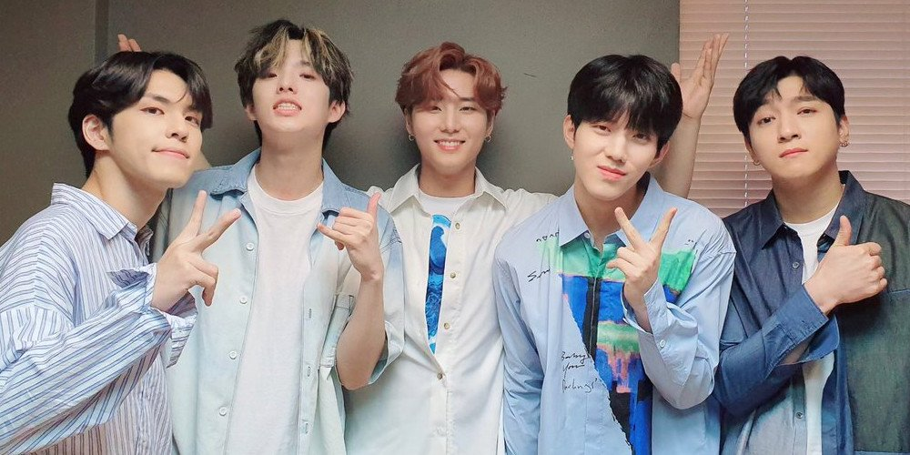
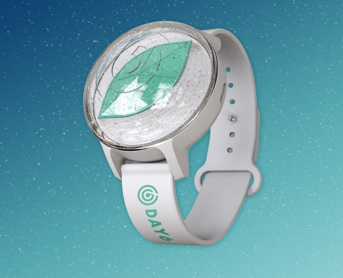
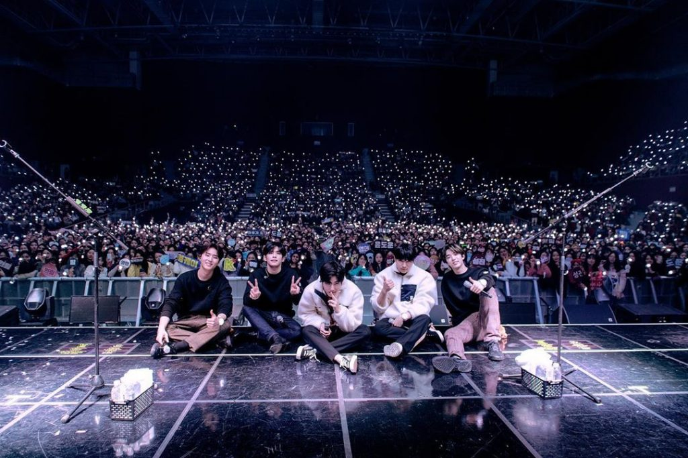

About Day6

left to right : Wonpil, Jae, Young K, Dowoon, Sungjin
Day6 (데이식스 / deisikseu) adalah grup band rock asal Korea Selatan yang dibentuk oleh JYP Entertainment. Grup ini beranggotakan lima orang, yaitu Sungjin, Jae, Young K, Wonpil, dan Dowoon.
Mereka debut pada tanggal 7 September 2015 dengan merilis album pertama mereka, The Day dengan lagu utama, Congratulations.
Pada awalnya mereka debut dengan enam orang anggota, yaitu dengan Junhyeok sebagai vokalist dan keyboardist. Namun pada tanggal 27 Februari 2016, JYPE mengumumkan bahwa Junhyeok memutuskan
untuk keluar dari Day6 karena alasan pribadi.
Nama fandom dari Day6 adalah myday. Tidak seperti kebanyakan boyband atau girlband korea,
Day6 tidak memiliki Lightstick, namun mereka memilih untuk menggunakan Lightband yang biasanya dipakai para penggemar
saat mereka sedang konser sebagai bentuk dukungan.

Lightband
Tours

Selama berkarir mulai dari 2015 hingga saat ini, Day6 telah berhasil menyelenggarakan banyak sekali konser lokal serta tur dunia.
Mereka telah berhasil menyelesaikan tiga tur dunia. Tur dunia tersebut terdiri dari dua World Tour yang bertajuk "Youth" (2018-2019) dan "Gravity" (2019-2020), serta satu Japan Tour (2018).
Konser dunia pertama mereka (Youth) dimulai pada tanggal 22 Juni 2018 di Seoul, tepatnya di Olympic Hall, dan berakhir pada tanggal 31 Maret 2019 di SK Olympic Handball Gymnasium.
Sedangkan konser dunia kedua mereka (Gravity) dimulai pada tanggal 9 Agustus 2019 di Jamsil Indoor Stadium, Seoul, dan berakhir pada tanggal 31 Januari 2020 di Madrid, Spanyol.
Tidak hanya tur keliling Asia saja, namun Day6 juga berhasil menggelar konser di Amerika Utara, Amerika Selatan, Eropa, dan Australia.
Day6 pun juga datang ke Indonesia dalam dua tur dunia tersebut.